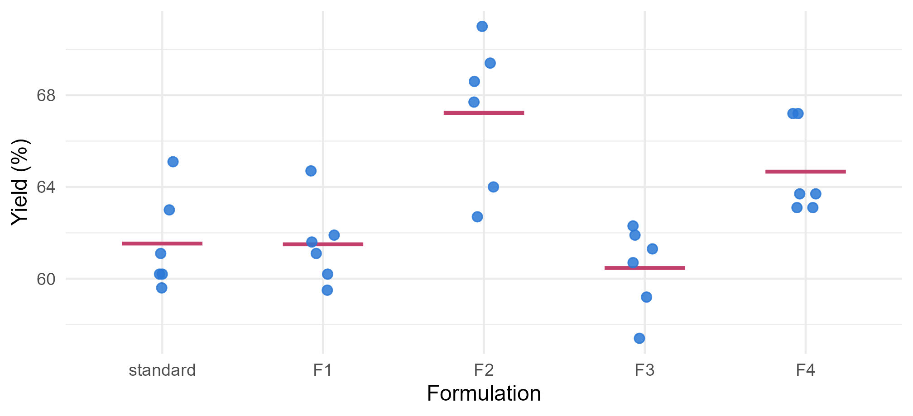
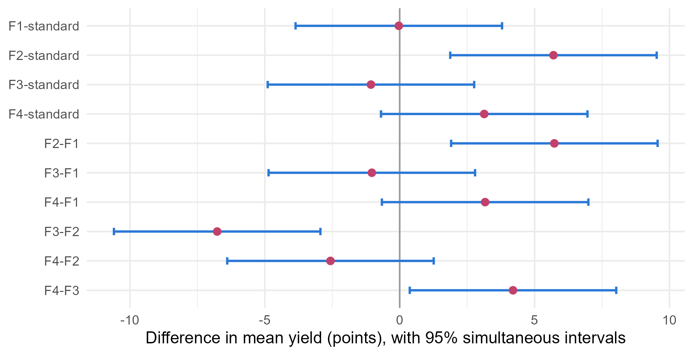

Module 2 · Lesson 13 of 15 Week 43 of 160 About 5–7 hours
One-way ANOVA
Comparing several groups at once, and then finding out which ones differ
Analyze a designed experiment that compares five catalyst formulations: split the variation into between- and within-group parts, see one-way ANOVA as a regression with dummy variables, control the error rate with Tukey and Bonferroni comparisons, test planned contrasts, and check the assumptions.
Lessons 5 to 12 squeezed answers out of an observational study, where the plant ran as it ran and the analysis had to untangle confounding, collinearity and unlucky runs. This lesson and the next are about the other way to learn: an experiment, where you decide the conditions yourself. A catalyst supplier sent four new formulations, and the process-development team tested them against the standard catalyst. The question sounds simple: are any of them better? Answering it properly takes one of statistics’ best-known tools, the analysis of variance, and a little care about asking many questions at once.
Five catalysts, thirty runs, one big question. This is the kind of experiment every chemical engineer runs sooner or later. Let’s analyze it like a pro!
In this lesson you’ll:
- see what makes a good comparative experiment: replication and randomization
- split the variation into a between-group and a within-group part, and test it with the F statistic
- see that one-way ANOVA is a regression with dummy variables
- find which groups differ, while controlling the chance of a false alarm, with Tukey’s and Bonferroni’s methods
- test a planned question with a contrast
- check the assumptions, and know the rank-based alternative
The screening experiment
The design was simple and careful. Each of the five formulations, the standard catalyst and the new F1 to F4, was tested in 6 runs, all at the standard conditions of 185 °C and 45 minutes, with feed from the same well-mixed lot. The 30 runs were done in a random order:
screening <- read_csv("data/catalyst_screening.csv", show_col_types = FALSE) |>
mutate(formulation = factor(formulation, levels = c("standard", "F1", "F2", "F3", "F4")))
head(screening, 8)
#> # A tibble: 8 × 3
#> run formulation yield_pct
#> <dbl> <fct> <dbl>
#> 1 1 F1 60.2
#> 2 2 F3 59.2
#> 3 3 F3 61.9
#> 4 4 F4 63.1
#> 5 5 F2 71
#> 6 6 F4 67.2
#> 7 7 F1 64.7
#> 8 8 F3 62.3Two features make it a good experiment:
- Replication. Six runs per formulation show how much the yield varies when nothing changes. Without that, you couldn’t tell a real difference from run-to-run noise.
- Randomization. If all the standard runs had been done first and all the F4 runs last, any drift during the experiment (a catalyst bed ageing, a sensor drifting, the weather changing) would have looked like a difference between formulations. Remember the sawtooth in Lesson 8? A random order spreads any drift evenly over the groups, so it can’t masquerade as an effect.
The factor(..., levels = ...) line puts the standard catalyst first, so that it’ll be the baseline. Here are the results:
ggplot(screening, aes(x = formulation, y = yield_pct)) +
stat_summary(fun = mean, geom = "crossbar", width = 0.5, color = "#C2416C", linewidth = 0.4) +
geom_jitter(width = 0.08, height = 0, size = 2.2, color = "#2a78d6", alpha = 0.85) +
labs(x = "Formulation", y = "Yield (%)") +
theme_minimal(base_size = 12)
The bars mark each group’s mean. F2 looks best, and F4 second, with the standard, F1 and F3 grouped together lower down. But with six noisy runs per group, which of those differences are real?
Between and within
The analysis of variance compares two ways in which the yields vary:
- Between groups: how far each formulation’s mean is from the grand mean of all 30 runs.
- Within groups: how far each run is from its own formulation’s mean. That’s pure run-to-run noise, since the runs within a group had identical conditions.
If the formulations are all the same, the group means should differ only by about as much as the noise allows. The sums of squares make this precise. With k groups of n_i runs, group means \bar{y}_i and grand mean \bar{y}:
\underbrace{\sum_{i}\sum_{j} (y_{ij} - \bar{y})^2}_{\text{SST}} = \underbrace{\sum_{i} n_i (\bar{y}_i - \bar{y})^2}_{\text{SSB, between}} + \underbrace{\sum_{i}\sum_{j} (y_{ij} - \bar{y}_i)^2}_{\text{SSW, within}} .
Each sum of squares gets its degrees of freedom: k - 1 = 4 between, and N - k = 25 within, for N = 30 runs. The mean squares compare them:
F = \frac{\text{MSB}}{\text{MSW}} = \frac{\text{SSB}/(k - 1)}{\text{SSW}/(N - k)} .
MSW estimates the noise variance \sigma^2, whatever the group means are. MSB estimates \sigma^2 too, if the groups are all equal, but it’s inflated if they differ. So an F near 1 is what equal groups look like, and a big F is evidence that they differ. Under the null hypothesis that all the true means are equal, F follows an F distribution with 4 and 25 degrees of freedom.
Your turn. Compute SSB, SSW and the F statistic by hand.
The within-group degrees of freedom are N - k = 30 - 5 = 25.
grand <- mean(screening$yield_pct)
groups <- screening |>
group_by(formulation) |>
summarise(n = n(), mean = mean(yield_pct), ss_within = sum((yield_pct - mean(yield_pct))^2))
ssb <- sum(groups$n * (groups$mean - grand)^2)
ssw <- sum(groups$ss_within)
(ssb / 4) / (ssw / 25)\text{SSB} = 188.9 and \text{SSW} = 127.4, so F = (188.9/4)/(127.4/25) = 47.2/5.09 = 9.27. The group means are spread out about nine times more than the noise alone would spread them.
aov() does it all in one go, and summary() prints the ANOVA table:
fit_aov <- aov(yield_pct ~ formulation, data = screening)
summary(fit_aov)
#> Df Sum Sq Mean Sq F value Pr(>F)
#> formulation 4 188.9 47.23 9.27 9.78e-05 ***
#> Residuals 25 127.4 5.09
#> ---
#> Signif. codes: 0 '***' 0.001 '**' 0.01 '*' 0.05 '.' 0.1 ' ' 1p = 0.0001: strong evidence that the formulations don’t all give the same yield. That’s all the F-test says. It doesn’t say which formulations differ, or by how much. That’s the next two steps’ job.
ANOVA is regression
There’s nothing new under the hood. A one-way ANOVA is exactly a linear regression on the formulation’s dummy variables (Lesson 7), and aov() is just lm() with ANOVA-style printing:
fit_lm <- lm(yield_pct ~ formulation, data = screening)
anova(fit_lm)
#> Analysis of Variance Table
#>
#> Response: yield_pct
#> Df Sum Sq Mean Sq F value Pr(>F)
#> formulation 4 188.91 47.229 9.2697 9.775e-05 ***
#> Residuals 25 127.37 5.095
#> ---
#> Signif. codes: 0 '***' 0.001 '**' 0.01 '*' 0.05 '.' 0.1 ' ' 1The same table, and the same F-test: it’s the partial F-test of all four dummies together (Lesson 6). The regression’s coefficients add something useful, because each one is a formulation’s difference from the baseline, the standard catalyst:
summary(fit_lm)$coefficients
#> Estimate Std. Error t value Pr(>|t|)
#> (Intercept) 61.53333333 0.9214964 66.77544860 1.067161e-29
#> formulationF1 -0.03333333 1.3031927 -0.02557821 9.797968e-01
#> formulationF2 5.70000000 1.3031927 4.37387362 1.888209e-04
#> formulationF3 -1.06666667 1.3031927 -0.81850267 4.208040e-01
#> formulationF4 3.13333333 1.3031927 2.40435158 2.393523e-02Your turn. How much more yield did F2 give than the standard catalyst? Find it among the regression coefficients.
The dummy for F2 is called "formulationF2".
fit_lm <- lm(yield_pct ~ formulation, data = screening)
coef(fit_lm)["formulationF2"]5.70 points: F2’s mean, 67.23%, minus the standard’s, 61.53%. Its t-test, p = 0.0002, compares just those two groups. But you’re about to see why one t-test among many needs care.
Which ones differ?
With five groups, there are 10 pairs to compare. Here’s the trouble: if you test each pair at the 5% level, each test has a 5% chance of a false alarm, and over 10 tests the chance of at least one false alarm grows to about 1 - 0.95^{10} = 40\%, even if nothing differs at all. That’s the fishing problem from Lesson 6 again. The probability of at least one false alarm in a family of tests is called the family-wise error rate, and multiple comparison methods keep it at 5%.
Bonferroni’s method is the simplest: multiply each p-value by the number of comparisons (here, 10), or equivalently test each one at the 0.5% level. It works for any set of tests, but it’s conservative: when there are many comparisons, it misses real differences.
Tukey’s honestly significant difference (HSD) is designed for exactly this job, all the pairwise comparisons of group means, and it’s less conservative than Bonferroni for it. It gives adjusted p-values and simultaneous confidence intervals: intervals that, all together, cover the true differences 95% of the time.
TukeyHSD(fit_aov)
#> Tukey multiple comparisons of means
#> 95% family-wise confidence level
#>
#> Fit: aov(formula = yield_pct ~ formulation, data = screening)
#>
#> $formulation
#> diff lwr upr p adj
#> F1-standard -0.03333333 -3.8606423 3.793976 0.9999999
#> F2-standard 5.70000000 1.8726910 9.527309 0.0016215
#> F3-standard -1.06666667 -4.8939757 2.760642 0.9224295
#> F4-standard 3.13333333 -0.6939757 6.960642 0.1471647
#> F2-F1 5.73333333 1.9060243 9.560642 0.0015204
#> F3-F1 -1.03333333 -4.8606423 2.793976 0.9302619
#> F4-F1 3.16666667 -0.6606423 6.993976 0.1402664
#> F3-F2 -6.76666667 -10.5939757 -2.939358 0.0002036
#> F4-F2 -2.56666667 -6.3939757 1.260642 0.3092134
#> F4-F3 4.20000000 0.3726910 8.027309 0.0264499TukeyHSD(fit_aov)$formulation |>
as.data.frame() |>
tibble::rownames_to_column("pair") |>
mutate(pair = factor(pair, levels = rev(pair))) |>
ggplot(aes(x = diff, y = pair)) +
geom_vline(xintercept = 0, color = "grey60") +
geom_errorbar(aes(xmin = lwr, xmax = upr), width = 0.25, orientation = "y", color = "#2a78d6", linewidth = 0.8) +
geom_point(size = 2.2, color = "#C2416C") +
labs(x = "Difference in mean yield (points), with 95% simultaneous intervals", y = NULL) +
theme_minimal(base_size = 12)
Intervals that miss zero mark differences you can trust. F2 beats the standard (by 5.7 points, somewhere from 1.9 to 9.5), F1 and F3. F4 beats F3. Everything else is uncertain: F4 might be better than the standard (by up to 7 points), or slightly worse.
Your turn. Without any adjustment, does F4 look better than the standard? Use pairwise.t.test(), which does all the pairwise t-tests with the pooled standard deviation.
No adjustment is p.adjust.method = "none".
unadjusted <- pairwise.t.test(screening$yield_pct, screening$formulation, p.adjust.method = "none")
unadjusted$p.value["F4", "standard"]p = 0.024: “significant” on its own. With the Bonferroni adjustment (p.adjust.method = "bonferroni") it becomes 0.24, and Tukey’s method gives 0.15. Which is right? It depends on the question you set out to ask. If “is F4 better than the standard?” was the only question, planned in advance, the unadjusted test is fine. If it’s one of ten comparisons you scanned for the most exciting one, it isn’t.
Your turn. Find Tukey’s adjusted p-value for F4 against the standard.
The rows are named like "F4-standard".
tk <- TukeyHSD(fit_aov)$formulation
tk["F4-standard", "p adj"]0.15. Allowing for all ten comparisons, the evidence that F4 beats the standard isn’t convincing. F4 deserves a second look, perhaps a follow-up experiment, but not a purchase order.
When every new formulation is compared only with a control, as here, Dunnett’s method is the specialist: it adjusts for just the four comparisons with the standard, and it’s a little more powerful than Tukey’s for that job. The emmeans and multcomp packages provide it (see the practice exercises).
Contrasts: asking a planned question
Sometimes the question isn’t about one pair. The supplier’s sales pitch was “our new formulations are better than your standard catalyst”. On average? That’s a contrast: a weighted combination of the group means whose weights add up to zero,
L = \sum_i c_i \bar{y}_i, \qquad \sum_i c_i = 0 .
“The average of the new formulations minus the standard” has weights -1 for the standard and \tfrac14 for each of F1 to F4. A contrast’s standard error comes from the pooled noise variance, MSW:
\text{SE}(L) = \sqrt{\text{MSW} \sum_i \frac{c_i^2}{n_i}}, \qquad t = \frac{L}{\text{SE}(L)} \text{ with } N - k \text{ degrees of freedom.}
Contrasts are the most efficient way to ask a specific question, and if you choose them before seeing the data, a few of them need no multiple-comparison adjustment.
Your turn. Test the supplier’s claim with that contrast.
Each group has n_i = 6 runs.
means <- tapply(screening$yield_pct, screening$formulation, mean)
weights <- c(-1, 1/4, 1/4, 1/4, 1/4)
msw <- sum(resid(fit_aov)^2) / 25
L <- sum(weights * means)
se <- sqrt(msw * sum(weights^2 / 6))
t <- L / se
c(L = L, t = t, p = 2 * pt(-abs(t), df = 25))On average, the new formulations beat the standard by 1.9 points, but p = 0.072. Not convincing, because the average mixes one clear winner (F2) with two that are no better (F1, F3). The right claim isn’t “the new formulations are better”, it’s “F2 is better”. That’s why the question matters as much as the analysis.
Checking the assumptions
One-way ANOVA is a linear model, so it makes Lesson 8’s assumptions: independent runs (the randomization helps), normal errors, and the same variance in every group. The last one matters most when the groups have different sizes. With equal groups, as here, ANOVA is fairly robust to moderate differences in spread.
The group standard deviations run from 1.8 to 3.2 points: F2 is the most variable. Is that more than chance? Two tests check:
- Bartlett’s test (Lesson 8),
bartlett.test(), is powerful but very sensitive to non-normality. - Levene’s test is more robust. It’s simply an ANOVA of each run’s absolute distance from its group’s median: if one group is more spread out, its distances are bigger.
car::leveneTest()does it, or you can do it by hand.
For the shape, a Q-Q plot of the residuals, and shapiro.test(resid(fit_aov)) gives p = 0.75: nothing to worry about.
If the assumptions failed badly, the Kruskal-Wallis test is the rank-based alternative: it replaces the yields by their ranks and asks whether the groups’ ranks differ, much as Spearman’s correlation did in Lesson 1. It assumes much less, but it says less too: it tests whether some group tends to give higher values, not anything about the size of the differences in means.
Your turn. Run Levene’s test by hand: compute each run’s absolute deviation from its group’s median, and run a one-way ANOVA on those.
The deviation from the group’s median: median(yield_pct) inside the grouped mutate().
spread <- screening |>
group_by(formulation) |>
mutate(abs_dev = abs(yield_pct - median(yield_pct))) |>
ungroup()
summary(aov(abs_dev ~ formulation, data = spread))F = 0.56, p = 0.70: no evidence that the spreads differ. F2’s larger standard deviation is within what chance produces with six runs per group. (Bartlett’s test agrees: p = 0.66.)
Challenge round
Challenge 1 · How many runs were needed? Before an experiment, you can work out how many runs per group you’d need to detect differences of a given size. power.anova.test() does it for a one-way design, from the variance of the true group means (between.var) and the noise variance (within.var). Suppose the true means were spread like the observed ones (variance 7.87) and the noise variance was 5.09. How many runs per formulation would give 90% power?
90% power is power = 0.9.
pw <- power.anova.test(groups = 5, between.var = 7.87, within.var = 5.09, power = 0.9)
pw$n3.6, so 4 runs per formulation would have been enough to detect differences like these, and 6 gave a power of over 99%. But “differences like these” is doing a lot of work: to detect F4’s 3-point advantage over the standard on its own, with Tukey’s adjustment, you’d need many more runs. Base the calculation on the smallest difference that would matter to the plant.
Challenge 2 · The rank-based test. Run the Kruskal-Wallis test on the screening data. Does it agree with the ANOVA?
The function is kruskal.test().
kruskal.test(yield_pct ~ formulation, data = screening)\chi^2 = 17.2 on 4 degrees of freedom, p = 0.0018. It agrees that the formulations differ, though with a larger p-value than the ANOVA’s 0.0001: ranks throw away some information, so when the ANOVA’s assumptions hold, ANOVA is more powerful.
Quick quiz
1. Why were the 30 runs done in a random order?
Randomization protects against confounders you didn’t think of, by making them unrelated to the treatments.
2. The ANOVA gives F = 9.27 with p = 0.0001. What can you conclude?
The F-test only says the means aren’t all equal. Multiple comparisons say which ones differ.
3. How is a one-way ANOVA related to regression?
aov() and lm() fit the same model. The coefficients are differences from the baseline group.
4. You compare all 10 pairs of five groups, each at the 5% level, and none of the groups really differ. What’s the chance of at least one “significant” result?
1 - 0.95^{10} = 0.40 (for independent tests, which is roughly right). That’s the family-wise error rate, which Tukey’s and Bonferroni’s methods keep at 5%.
5. What’s the difference between Tukey’s and Bonferroni’s methods?
Both keep the chance of any false alarm at 5%. Tukey’s uses the exact distribution of the largest pairwise difference, so it gives narrower intervals for that particular job.
6. What is a contrast?
For example, -1 for the standard and \tfrac14 for each new formulation compares the average of the new ones with the standard.
Wrap-up
You can now analyze a comparative experiment from start to finish! Here’s what you’ve learned:
- Good experiments replicate (to measure the noise) and randomize (to protect against drifts and hidden confounders).
- ANOVA splits the total variation into between-group and within-group parts: F = \text{MSB}/\text{MSW}, with k - 1 and N - k degrees of freedom.
aov()andsummary()print the table. - ANOVA is regression on dummy variables. Put the control group first with
factor(..., levels = ), and the coefficients compare each group with it. - Multiple comparisons: many tests inflate the family-wise error rate. Tukey’s HSD (
TukeyHSD()) handles all pairs, Bonferroni (pairwise.t.test(..., p.adjust.method = "bonferroni")) handles anything, and Dunnett’s handles comparisons with a control. - Contrasts answer planned questions efficiently: L = \sum c_i\bar{y}_i, with \text{SE} = \sqrt{\text{MSW}\sum c_i^2/n_i}.
- Assumptions: check equal spreads with Levene’s or Bartlett’s test and the residuals’ shape with a Q-Q plot. The Kruskal-Wallis test is the rank-based alternative.
- The verdict: F2 is better than the standard by about 6 points (Tukey interval 1.9 to 9.5). F4 might be, and the others aren’t.
TipPractice in RStudio (optional, about an hour)
Download catalyst_screening.csv into your project’s data-raw/ folder, and install the emmeans package.
- emmeans. Run
emm <- emmeans::emmeans(fit_aov, ~ formulation), thenpairs(emm)(Tukey-adjusted pairs),emmeans::contrast(emm, "trt.vs.ctrl")(Dunnett’s comparisons with the standard), andplot(emm, comparisons = TRUE). - A custom contrast. With emmeans, test the contrast “F2 and F4 together against the standard”:
emmeans::contrast(emm, list(best_vs_std = c(-1, 0, 0.5, 0, 0.5))). - Randomize your own experiment. Write the R code that would have produced a random run order for 6 runs of each of 5 formulations, using
sample(). Then think about a constraint: if only 10 runs can be done per day, how would you make sure every day gets a fair mix? (That’s the idea behind blocking, in the next lesson.) - The residuals. Plot the residuals of
fit_aovagainst the run order. Is there any sign of a drift during the experiment?
NoteKey words from this lesson
- Analysis of variance (ANOVA)
- A method that splits the variation in a response into parts due to different sources, and tests them with F statistics.
- Replication and randomization
- Repeating each treatment to measure the noise, and assigning the run order by chance to protect against drift and hidden confounders.
- Between- and within-group sums of squares
- The variation of the group means around the grand mean (SSB), and of the observations around their own group means (SSW).
- Family-wise error rate
- The probability of at least one false alarm in a set of tests.
- Tukey’s honestly significant difference (HSD)
- A method for all pairwise comparisons of group means that controls the family-wise error rate, with simultaneous confidence intervals.
- Bonferroni correction
- Multiplying each p-value by the number of tests, which controls the family-wise error rate for any set of tests.
- Contrast
- A weighted combination of group means, with weights that sum to zero, used to test a specific comparison.
- Kruskal-Wallis test
- A rank-based test of whether several groups differ, the nonparametric counterpart of one-way ANOVA.
NoteWant to read more?
- Penn State STAT 502, Lesson 2: ANOVA Foundations and Lesson 3: ANOVA Models Part I. The ANOVA table, Tukey’s test and contrasts, then the model, its assumptions and power.
- NIST/SEMATECH e-Handbook of Statistical Methods, “Are the means equal?”. The handbook’s one-way ANOVA section: an engineering-flavored walk through the calculations, with multiple comparisons.
- Douglas Montgomery, Design and Analysis of Experiments (Wiley), chapter 3. The standard engineering textbook on experiments, and a great companion for this lesson and the next.